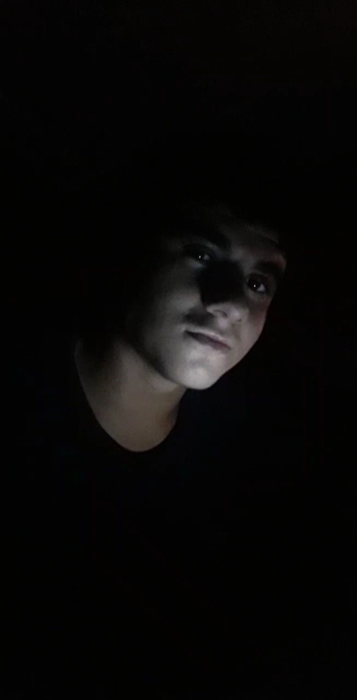

Antony Gaetano
Desenvolvedor Front-End
Olá, eu sou
Antony Gaetano
Front End Developer
Desenvolvimento Web - Programação de sites responsivos, motagem de Lojas Virtuais. Para saber mais, entre em contato abaixo.
Desenvolvedor Front End Graduando em Tecnologia em Engenharia De Controle E Automação pelo Instituto Federal Da Paraiba - IFPB.
Constantemente antenado à novas tendências tecnológicas, fiz cursos virtuais em Desenvolvimento Web, Design Responsivo, criação de sites, Lojas Virtuais, Páginas Web, e muito mais.
Mais de 1 ano estudando e trabalhando como Front-End